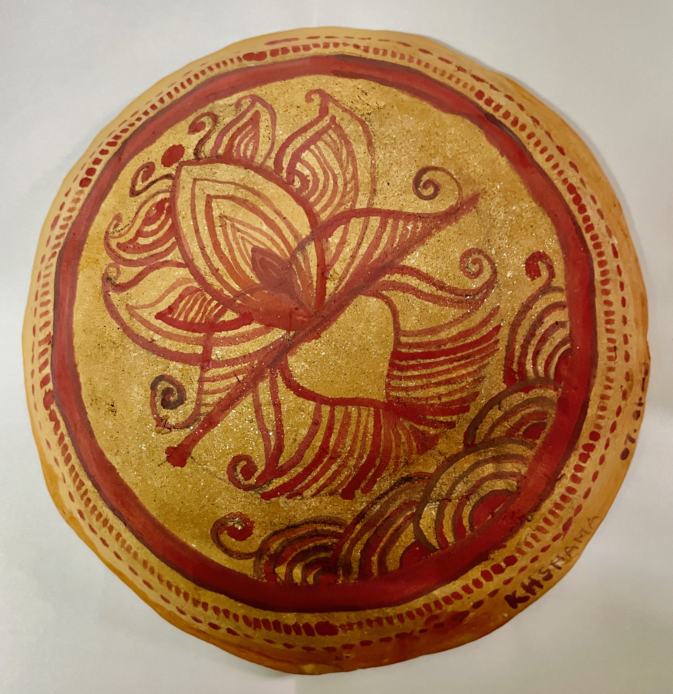
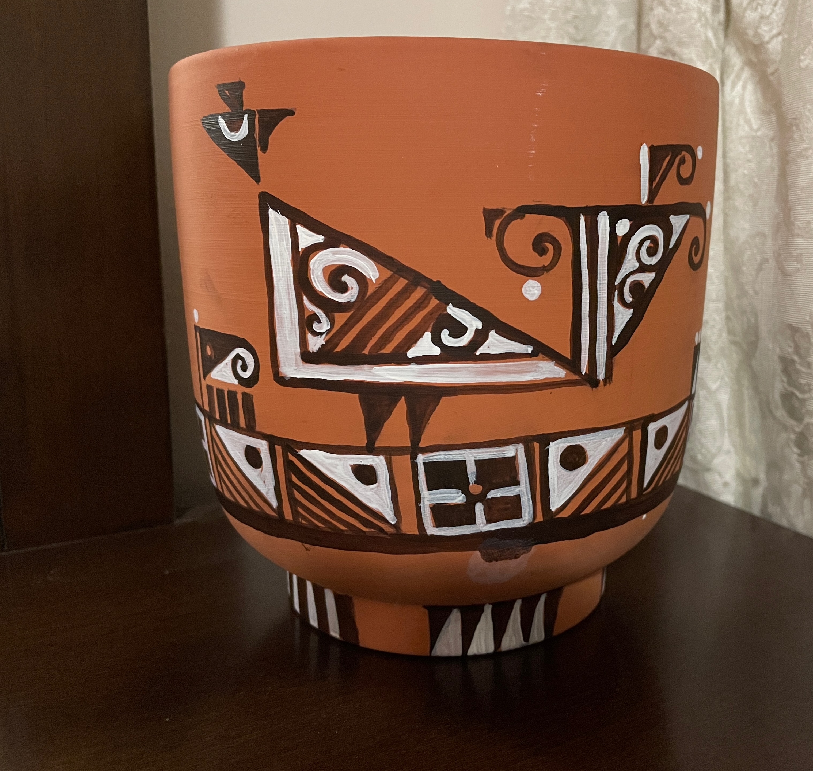

Both the patterns depicted here on terracotta are re-imaginations of objects
from the natural world -- On the left is a lotus, while on the right is a bird drawn using alpana
motifs. Inspired by the original designs of the famed artist from Shantiniketan,
Sudhiranjan Mukherjee.

Biography
Haimonti is trained as a computer scientist,
but loves to read, paint, and write in her spare time.